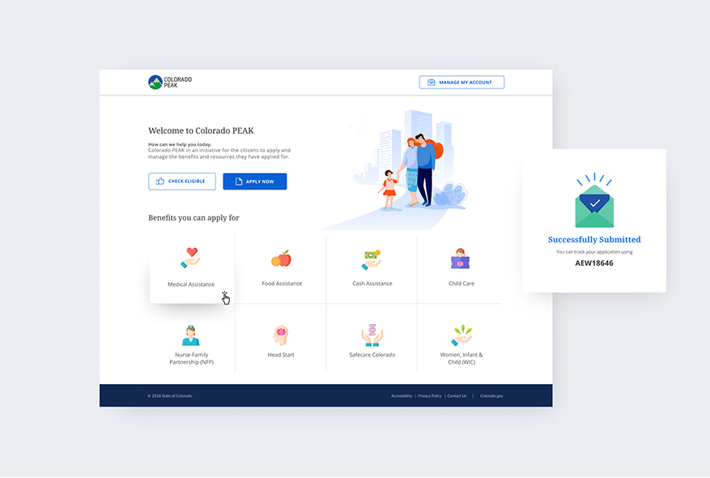
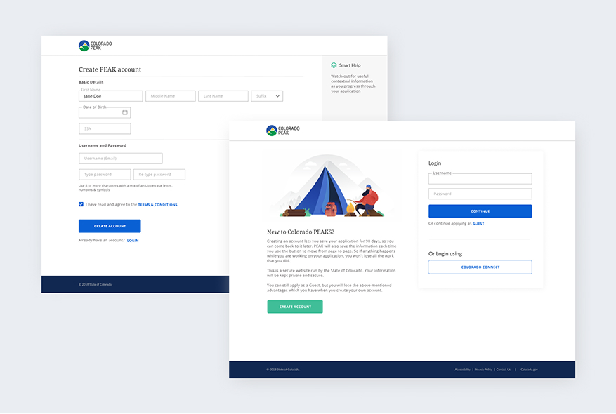

Overview
Colorado's Peak platform served millions of citizens navigating complex benefit systems — from healthcare enrollment to unemployment insurance. Despite the critical importance of these services, the legacy interface created unnecessary friction, confusion, and inequitable access for the people who needed help most.
This was a Deloitte internal pitch: a team of designers proposing a vision for how a modern civic service platform could work — grounded in real research and built around human needs, not bureaucratic process.
The Challenge
Colorado's Peak platform served millions of citizens navigating complex benefit systems, but the legacy interface created unnecessary friction and confusion. Case workers spent significant time helping users with basic navigation rather than providing substantive support.
"Case workers told us they spent up to 40% of their time helping users find the right form — not completing the form."

Our Approach
We conducted extensive field research with case workers and citizens — identifying real pain points, language barriers, and accessibility gaps in the existing system.
From this foundation, we proposed a unified service portal that reduced cognitive load, used plain language throughout, and met WCAG AA standards. The design centered equity: ensuring that citizens most in need could access services without friction or fear.

Methods Used
Sessions with citizens and case workers to map the real experience — not the assumed one.
Synthesised 200+ observations into themes that drove design decisions.
Mapped front-stage and back-stage touchpoints to expose systemic gaps.
Validated key flows with representative users across age groups and literacy levels.